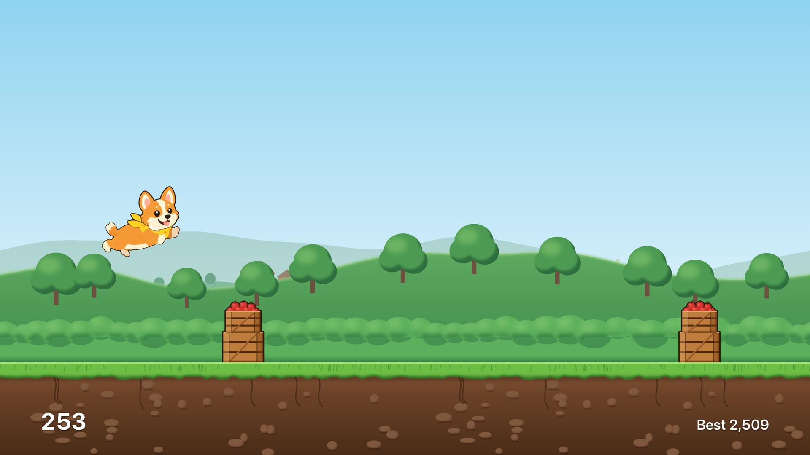

Corgi Runner
Run, jump and duck with a corgi on your iPhone, iPad, Mac or Apple TV.
How to play
| Touch, Space or Up. On Apple TV, Select or Up | Jump. Hold to jump higher. |
| Down or S. On Apple TV, Down or a swipe down | Duck. In the air, drop faster. |
| Swipe down on iPhone or iPad | In the air, drop faster. Duck when you land. |
| The pause button, Escape or P. On Apple TV, Play/Pause or Menu | Pause. |
Questions
Where are my best runs? Open Leaderboard on the pause panel or after a run. The ten best runs stay on this device.
How do I change the name? After a run, choose Name.
The world leaderboard is empty. Sign in to Game Center in the settings of your device, then open the game again.
Support
Write to xepozz@icloud.com.